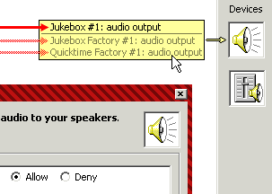

| |
What's New? |
||||||
| Google Techtalk series on ABAC - Authorization Based Access Control | |
| Robust Composition: Towards a Unified Approach to Access Control and Concurrency Control |
MarkM's dissertation. Explains the rationale, philosophy, and goals of E and related systems. Supersedes Paradigm Regained, Concurrency Among Strangers, and The Structure of Authority. |
| SCOLL: |
by Yves Jaradin, Fred Spiessens, & Peter van Roy Provides a formal system for reasoning about safe bounds on authority (as defined in Robust Composition). |
| The E-on-Common-Lisp Project | Kevin Reid's reimplementation of E on Common Lisp continues to make progress. This project now has its own page. |
| The E Surprise List | Kevin's list of surprising things about E is worth a look. |
| Progress on E parser in Antlr | E. Dean Tribble's Antlr-based parser for E is now in the E distribution, and accepts almost all E code in the distribution. |
| Bug database moved to Sourceforge | Thanks to Steve Jenson for preserving continuity of our bug database following the loss of the previous site. |
Concurrency
Among Strangers: |
by Mark S. Miller, E. Dean Tribble, Jonathan Shapiro Explains E's concurrency control & distributed computing model. |
| Safer Scripting Through Precompilation | by Ben Laurie Explains "CaPerl", Ben's attempt at a capability-safe variant of Perl. |
| Polaris:
Towards Virus Safe Computing for Windows XP by Marc Stiegler, Alan H. Karp, Ka-Ping Yee, Mark Miller |
Shows how to apply the lessons of CapDesk to secure legacy apps running on legacy OSes, in order to create a desktop that's safer, more functional, and more usable at the same time. Requires only that the legacy OS provide a working ACL system. |
| Plash: the Principle of Least Authority Shell by Mark Seaborn |
A bash-like shell for Unix, in which filename arguments grant the program authority to access those files. |
| The Oz-E
Project: Design Guidelines for a Secure Multiparadigm Programming Language by Fred Spiessens, Peter Van Roy |
Explores the issues in making an object-capability-secure variant of the Oz language. The lessons here should prove useful in making an obj-cap-secure variant of any memory-safe language whose underlying formalism is consistent with obj-cap-security. |
| The L Programming
Language & System by Anthony Hannan |
A minimal language with many of the goals of E and Smalltalk. |
| The Structure of
Authority: Why security is not a separable concern by Mark S. Miller, Bill Tulloh, Jonathan Shapiro |
A tour of POLA integrated across four levels, from humans to objects. Least authority is fractal! |
| Origins of
the Non-Delegation Doctrine by Nick Szabo |
Applies POLA to constitutional law. |
| Causeway: A message-oriented distributed debugger by Terry Stanley, Mark Miller from an idea by E. Dean Tribble |
Browse the causal graph of events in your distributed computation with a follow the process view, or our new follow the conversation view. |
| Donut-Lab | A PlanetLab with no center. An example of what can be accomplished in E in 72 hours. |
| The E Language Wiki | Embedded in an impressive web of links to related material, such as CapabilitySecurityModel, a nice taxonomy of kinds of capability systems. |
| Handling Symbolic Data | The debut of a new section of this website. Explains E's term-trees and serialization. |
| The Den Project A distributed mud system written in E |
Kevin Reid's prototype towards a decentralized, persistent, secure, social virtual reality; to support mutual suspicion between parts of its world. This is the application area E was originally created for. |
| MILOSProject Bringing capability security to Mozart/OZ |
As part of this effort, Fred Spiessens is using pi-calculus to try formalizing the notions of "authority" and "causality" used in Paradigm Regained. |
YURL.net launches
|
E will be switching from VatTP and cap:// URIs to the httpsy protocol and httpsy:// URLs. (Separately, CapTP will be switching from Java serialization to Data-E.) |
| We are making progress towards having a local (non-distributed) headless (without a UI toolkit) E compiled through GCJ. | This should make for an easier install of E and of apps written in E. It will also enables linking with C code through CNI, which is both simpler and higher performance than JNI. |
| Paradigm Regained: Abstraction Mechanisms for Access Control |
Actual policies are enforced by building abstractions on base mechanisms. Capabilities support this practice. Most formal analysis has missed this source of power. (Discussion thread root.) |
| The SkyNet Virus Why it is Unstoppable; How to Stop it |
Marc Stiegler explains what it means to apply the Principle
of Least Authority (POLA) consistently, at both the programming
level (using capabilities) and user-interface level (demonstrating
CapDesk). |
| Building a Virus-Safe Computing
Platform: Don't add security. Remove insecurity. |
Mark Miller explains how capabilities recursively reduce vulnerabilities by making the access matrix fractal. |
| Institutions as Abstraction
Boundaries: |
Economies and object systems both compose knowledge by coordinating the plans of mutually suspicious parties, by using abstraction in similar ways. Bill Tulloh and Mark Miller apply object concepts to understand the role of abstraction in economic activity. |
| Safe Serialization Under Mutual Suspicion | Conventional "language" technology give us only separate single machine ephemeral object-capability graphs. Serialization -- with the security properties explained here -- is the fabric for stitching these together into a virtual distributed persistent graph. |
| Escape from Multithreaded Hell | Stefan Reich's slide presentation pulls together for the first time many aspects of E's concurrency into a single coherent explanation. The original in German. |
| E Code Library project on SourceForge.net! | Run by Darius Bacon, who is making progress on Smallcaps and ENative at this site. |
| Dean starts the E-on-Squeak project | Whereas Squeak-E is a variant of Squeak with features from E, E-on-Squeak is E itself, implemented on the Squeak virtual machine. The Squeak virtual machine is far more suited to running E than is the JVM. Read the thread starting here. |
| E at JHU and HP Labs | MarkM changes jobs in order to keep working on the same thing. E stays open. |
| The Squeak-E Swiki | The home page of the Squeak-E project; building a capability secure distributed Smalltalk. |
| Capability Myths Demolished | gives a brief history of how capabilities have been misunderstood, and sets the record straight. Read Usenix2003's rejection of our paper, including Boebert's take on his "On the Inability of an Unmodified Capability System to Enforce the *-Property", which we cite. |
| User Interaction Design for Secure Systems | Ka-Ping Yee's paper openning up this whole new area of inquiry has just been accepted by the 4th International Conference on Information and Communications Security. (CapDesk largely follows these principles.) |
| E supports SWT starting with the 0.8.21 release. | SWT, the Standard Widget Toolkit, is IBM's alternative to Swing. Unlike Swing, it's simple enough to be tamed (made to follow capability discipline). |
| Progress towards Auditors | Ping is doing Auditors for E as a class project. |
| Squeak-E | Rob Withers and other Squeakers start implementing E semantics in Squeak. |
| Distributed Updoc and the evalServerPool | In 0.8.17, Terry Stanley has Updoc farm out work to a distributed pool of evalServers. |
| A
Security Analysis of the Combex DarpaBrowser Architecure by David Wagner and Dean Tribble |
This Darpa sponsored security review concludes by saying: |
| We wish to emphasize that the web browser
exercise was a very difficult problem. It is at or beyond the
state of the art in security, and solving it seems to require
invention of new technology. If anything, the exercise seems to
have been designed to answer the question: Where are the borders
of what is achievable? The E capability architecture seems to
be a promising way to stretch those borders beyond what was previously
achievable, by making it easier to build security boundaries
between mutually distrusting software components. In this
sense, the experiment seems to be a real success. Many open questions
remain, but we feel that the E capability architecture is a promising
direction in computer security research and we hope it receives
further attention.
|
|
| At the coming O'Reilly Emerging Technology Conference: |
MarcS shows CapDesk, and explains how E, capabilities, caplets, and POLA (the Principle Of Least Authority) bring about an intuitive secure desktop invulnerable to viruses. |
| E 0.8.12 released, with CapDesk and the DarpaBrowser. (This is no longer the current release of E.) | This is the release about to be subjected to a security review by David Wagner and Dean Tribble. We'll let you know how it goes! |
| Combex™ pages debut | The for-profit facet of the E project. |
| The Digital Path: Smart Contracts and the Third World |
Our draft paper, and our best explanation to date of smart contracts, accepted to Austrian Perspectives on the New Economy. |
| Mac OS X support is finally here, in E 0.8.10!! | Many thanks to Chris Hibbert and Charles Evans! |
| MarcS' eDesk debuts in 0.8.10delta4 | Conventional seeming gui desktop environment for installing and running caplets in which authorization is intuitively bundled in with conventional user designation actions. |
| 0.8.10gamma2: Development paths join. | Dean's transformer (see below) in now integrated into the main development path. This is the first release to have both CapTP and the speed of offset-based (rather than name-based) variable access. |
| 0.8.10alpha1: A brave new CapTP (our cryptographic capability protocol). |
This is the first release of E to be distributed (with full pipelining support, but no 3vat introductions yet), persistent (sort-of), and to support and confine locally untrusted code. The is the new current E distribution. |
| The Dean-Transformer Release | The new release 0.8.9t.1 (a side branch off 0.8.9t) contains Dean's wonderful new transformer, making interpretation faster, and taking a big step towards a compiler. |
| Bug Reporting and Tracking | Due to the generous efforts of Steve Jenson (Thanks!), we now have a real live bug tracking system. We're using the SourceForge software as installed by Steve on his own server. |
| What's Updoc? | Updoc turns documentation with embedded code examples into readable and maintainable regression tests. As explained here and here, this web site is already starting to do double duty as a test suite for E. |
| Combex gets money to work on E! | Combex is our startup dedicated to exploiting the commercial potential for E, distributed cyptographic capabilities, and smart contracting. As explained here, thanks to the military industrial complex, our startup has now started up, and we should be going into high speed on E development. |
| Secure UI Draft Design |  Miriam Walker & Ka-Ping Yee break important new ground: A secure graphical user interface for interacting with a general purpose secure platform. Even more important: their seven principles of secure UI design! |
-
Marc Stiegler posts his draft book The E Language in a Walnut.
-
Announcing The ENative Project. How fast can a simple implementation of E be?
-
"Contracting-out Contract Law" (Powerpoint) To be presented at Lex Cybernetoria 2
Smart contracts present new hope for the third world. -
Here are some recently posted explanations.
-
The Three Parts of Security is a great short statement by Bill Frantz of the problems a security architecture needs to solve.
-
Lambda for Humans: The PetName Markup Language explains a user-interface for enabling humans to securely interact with a world of capabilities, and to use capabilities to securely interact with other humans.
-
Unibus Sketch sketches a single-key variant of Pluribus, to demonstrate the independence of cryptographic capabilities from the particular choice of cryptographic substrate.
-
In a crit-mail thread, Ralph Hartley establishes a surprising case where capabilities do fall short of theoretically possible security, summarized in Where Capabilities Do Fall Short.
-
Quasi-Literals and XML proposes a way to leverage E's Quasi-Parser Framework to enable XML transformations to be written more clearly and easily.
-
-
DropletsTM was conceived with the aim of creating an E like capability environment based on the current WWW infrastructure and client browsers. In this environment, programmers can reason about the security of their web application in the same way that they reason about the security of an E application. The Waterken DropletsTM software supports the ERTP, allowing programmers to deploy Java smart contracts much like those written in E.
-
Marc Stiegler's latest science fiction novel, Earthweb, is now available. Its opening scene is an accurate portrayal of a capability-based erights exchange, inspired directly by our plans to do likewise in E. The future of Earthweb is built on the future of bidirectional hypertext, E-style cryptographic-capability-based emarkets, and Robin Hanson's Idea Futures Markets.
-
Marc Stiegler (again) writes and open-sources Secureit-Echat, a strongly-secure two-person chat program, written in five pages of E. Around three of those pages are user interface. This easy-to-read program is a good example of how to construct distributed secure applications in E.
-
Check out the still-rough, but much better, E-Language Tutorial.
Unless stated otherwise, all text on this page which is either unattributed or by Mark S. Miller is hereby placed in the public domain.